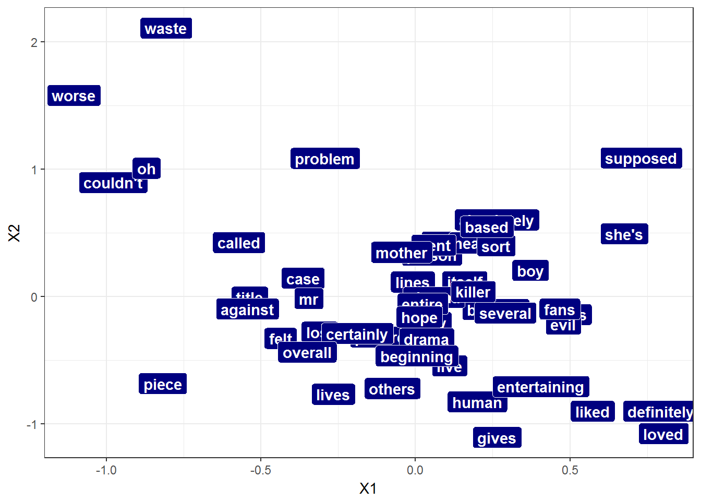

Demo the application of CNN for NLP task with varying length sequences using both padding and bucketing through custom iterator with MXNet R package
Example based on sentiment analysis on the IMDB data.
Load some packages
require("readr")
require("dplyr")
require("plotly")
require("stringr")
require("stringi")
require("AUC")
require("scales")
require("mxnet")## Init RcppLoad utility functions
source("../mx_io_bucket_iter.R")
source("../cnn_bucket_setup.R")
source("../cnn_bucket_train.R")The loaded data has been pre-process into a lists whose elements are the buckets containing the samples and their associated labels.
This pre-processing involves 2 scripts:
#####################################################
### Load preprocessed data
corpus_bucketed_train<- readRDS(file = "../data/corpus_bucketed_train_100_200_300_500_800_left.rds")
corpus_bucketed_test<- readRDS(file = "../data/corpus_bucketed_test_100_200_300_500_800_left.rds")
vocab <- length(corpus_bucketed_test$dic)
### Create iterators
batch_size = 64
X_iter_train<- mx_io_bucket_iter(buckets = corpus_bucketed_train$buckets, batch_size = batch_size, data_mask_element = 0, shuffle = TRUE)
X_iter_test<- mx_io_bucket_iter(buckets = corpus_bucketed_test$buckets, batch_size = batch_size, data_mask_element = 0, shuffle = FALSE)num.label=2
num.embed=2
num_filters=16
update.period = 1
metric<- mx.metric.accuracy
input.size=vocab
initializer=mx.init.Xavier(rnd_type = "gaussian", factor_type = "in", magnitude = 2)
dropout=0.25
verbose=TRUE
batch.end.callback<- mx.callback.log.train.metric(period = 50)
epoch.end.callback<- mx.callback.log.train.metric(period = 1)seq.len<- 300
cnn_graph<- cnn.symbol(seq.len=seq.len,
input.size=input.size,
num.embed=num.embed,
num_filters = num_filters,
num.label=num.label,
dropout=dropout)
graph.viz(cnn_graph, shape=c(seq.len, batch_size), type = "vis", direction = "LR", graph.height.px = 120)devices<- list(mx.cpu())
end.round=24
optimizer<- mx.opt.create("adadelta", rho=0.92, epsilon=1e-6, wd=0.0001, clip_gradient=NULL, rescale.grad=1/batch_size)
system.time(model_sentiment_cnn<- mx.cnn.buckets(train.data = X_iter_train,
eval.data = X_iter_test,
begin.round = 1,
end.round = end.round,
ctx = devices,
metric = metric,
optimizer = optimizer,
kvstore = "local",
num.embed=num.embed,
num_filters = num_filters,
num.label=num.label,
input.size=input.size,
update.period=1,
initializer=initializer,
dropout=dropout,
batch.end.callback=batch.end.callback,
epoch.end.callback=epoch.end.callback))
mx.model.save(model_sentiment_cnn, prefix = "models/model_sentiment_cnn_Visual_v5", iteration = 24)In this minimalistic example, embeddings are only 2 dimensionnal, though it still provides enough seperation potential for the classifier to achive over 86% accuracy.
corpus_bucketed_train<- readRDS(file = "../data/corpus_bucketed_train_100_200_300_500_800_left.rds")
corpus_bucketed_test<- readRDS(file = "../data/corpus_bucketed_test_100_200_300_500_800_left.rds")
model_sentiment<- mx.model.load(prefix = "../models/model_sentiment_cnn_Visual_v5", iteration = 24)
dic <- corpus_bucketed_test$dic
rev_dic <- corpus_bucketed_test$rev_dic
embeddings_weights<- t(as.array(model_sentiment$arg.params$embed_weight))
embeddings<- data.frame(label=rev_dic, embeddings_weights)
embeddings<- embeddings[-1, ]
embeddings_20<- embeddings[400:450,]
p <- ggplot(embeddings_20, aes(x = X1, y = X2, label = label))
p+geom_label(fill="navy", colour="white", fontface = "bold") + theme_bw()
#####################################################
### Inference
ctx<- list(mx.cpu())
model_sentiment<- mx.model.load(prefix = "../models/model_sentiment_cnn_Visual_v5", iteration = 24)
corpus_bucketed_train<- readRDS(file = "../data/corpus_bucketed_train_100_200_300_500_800_left.rds")
corpus_bucketed_test<- readRDS(file = "../data/corpus_bucketed_test_100_200_300_500_800_left.rds")###############################################
### Inference on train
batch_size<- 64
X_iter_train<- mx_io_bucket_iter(buckets = corpus_bucketed_train$buckets, batch_size = batch_size, data_mask_element = 0, shuffle = F)
infer_model_on_train <- mx.cnn.infer.buckets(infer_iter = X_iter_train,
model = model_sentiment,
ctx = ctx,
kvstore="local")
pred_train<- apply(infer_model_on_train$predict, 1, which.max)-1
labels_train<- infer_model_on_train$labels
acc_train<- sum(pred_train==labels_train)/length(labels_train)
roc_train<- roc(predictions = infer_model_on_train$predict[,2], labels = factor(labels_train))
auc_train<- auc(roc_train)Accuracy: 92.2%
AUC: 0.9726
###############################################
### Inference on test
X_iter_test<- mx_io_bucket_iter(buckets = corpus_bucketed_test$buckets, batch_size = 32, data_mask_element = 0, shuffle = F)
infer_model_on_test <- mx.cnn.infer.buckets(infer_iter = X_iter_test,
model = model_sentiment,
ctx = ctx,
kvstore="local")
pred_test<- apply(infer_model_on_test$predict, 1, which.max)-1
labels_test<- infer_model_on_test$labels
acc_test<- sum(pred_test==labels_test)/length(labels_test)
roc_test<- roc(predictions = infer_model_on_test$predict[,2], labels = factor(labels_test))
auc_test<- auc(roc_test)Accuracy: 86.3%
AUC: 0.9396